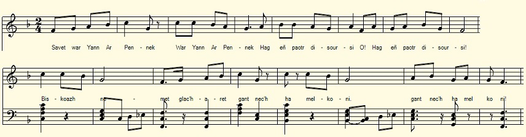
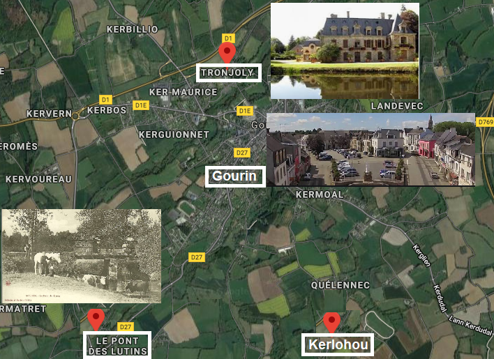

Son Yann ar Pennek
La chanson de Jean Le Pennec
Chant collecté par Théodore Hersart de La Villemarqué
dans le 2ème Carnet de Keransquer (pp. 65-67).

Mélodie
Arrangement Christian Souchon (c) 2019
|
A propos de la mélodie Inconnue. Remplacée par "Pauvre Jeannic" (Paour kaezh Yannig), tiré de "La Paroisse bretonne de Paris" de l'Abbé François Cadic, novembre 1923. Il s'agit d'un autre Yannig, un simple d'esprit, celui-là, qui est mené par le bout du nez, par sa femme et son valet. Les sous-entendus louches de ce chant satirique semblent ne pas avoir frappé l'abbé (bien qu'il parle du "monde sans pitié pour les maris malheureux"") . A propos du texte La structure de "Paour kaezh Yannik" est assez différente de celle du présent chant. Un refrain (Diskan) identique suit chaque distique: Ma gwreg ha ma mevel / a zebr toud ar c'hig Ha me ar paour kaezh Yannig, / nemet un askornig. DISKAN: Ha yaou la, me zo paour kaezh Yannik Ha yaou la, me zo Yannig, siwazh! Comme La Villemarqué n'a pas noté de refrain, le rapprochement que nous faisons est sans doute injustifié. Si ce n'est que Yannig est, nous apprend l'Abbé Cadic, "un personnage légendaire... contre lequel la malice populaire prend plaisir à décocher ses traits". |
About the tune Unknown. Replaced by "Pauvre Jeannic" (Paour kaezh Yannig), taken from "The Breton Parish in Paris" of the Rev. François Cadic, November 1923. It is about another Yannig, a simpleton, whom his wife and his manservant lead by the nose. The equivocal innuendo of this satirical song apparently failed to draw the priest's attention (although he mentions "how merciless people are for unhappy husbands"). About the lyrics: The structure of "Paour kaezh Yannik" is quite different from that of the present song. The same chorus (Diskan) is appended to each couplet: Ma gwreg ha ma mevel / a zebr toud ar c'hig Ha me ar paour kaezh Yannig, / nemet un askornig. DISKAN: Ha yaou la, me zo paour kaezh Yannik Ha yaou la, me zo Yannig, siwazh! Since La Villemarqué did not record any chorus, paralleling these two songs is probably unjustified. Nevertheless Yannig is, so tells us the Rev. Cadic, "a legendary character ... at whom the populace take pleasure in throwing their darts." |
| War
BREZHONEK p. 65 / 34 Son Yann Ar Pennek 1. Savet da Yann Ar Pennek, hag eñ paotr disoursi. [1] Biskoazh nemet glacharet gant nec'h ha melkoni. 2. Yannig Pennek -deus ur chi hag razh warnañ pikoù A lamm evel un heizez uhel a-dreist ar poulloù 3. Yannig Pennek a lare da Jakez Maligou: - Pa yefec'h da Gerloioù, grit va chourchemennoù 4. Da Varia ar Vouger a jomm er verouri, Ha da Loiza Glodiner derchel karantez din [2] 5. Me a zonje ganin-me buhan e oan dimezet Da unan paotr] a Veil Traonjoli pa n' em refuset ket. - 6. Yann ar Pennek a lare pa aet dar Pont ar Barzh: - Ma ouifenn vez Marcharid me a lammfe e-barzh 7.' Pe a rafe mont ar vouilhenn betek va daoulagad Mar rafe, e vefe (Marc'haridik) paeet mat. 66 8. - Dre e-leal, Marc'harid, ha din-me leveret Na chwi gafe din remed, remed vit ma chleñved 9. - E-leal, Yann ar Pennek Ne vin ket traitour deoc'h Chwi zo klañv gant ar chleñved, Me ne wellain ket deoch 10. Me 'm-eus un tammig lien e ti ar gwiader Hag a rey deoch-c'hwi ur zach ha pa vi (' tont) dar ger 11. Hag Rafet dont da Gerloioù da c'hounit ho tigarez [3] 12. Ha me am-eus pemp kant skoet evel pemp kant diner Ur gwele war vranelloù, ur chofr hag un armel. 13. Bet int eus a vourc'h Gourin, dilhad matezh laset Bremañ ne gavan (?) nikun da lakaat em gwele! 14. Dar foar war-lerc'h e Gourin me oa aet da bourmen Ganin ur march inkane pevar pe pemp jupen 67 / 35 15. . . . . . . ur botoù-ler bouklet Evit ma gwech diwezhañ kenavo dar merched. = Traduction: Christian Souchon = KLT gant Christian Souchon |
TRADUCTION FRANCAISE p. 65 / 34 Chanson de Jean Le Pennec 1. Jean Le Pennec je chante, le garçon insouciant Que le spleen et l'angoisse, laissent indifférent. 2. De Jean Pennec la chienne, au poil tout tacheté Bondit tel une biche par dessus les fossés 3. Jean Le Pennec demande à Jacques Maligou: - Présentez mes hommages, à ceux de Kerlohou, 4. A l'aimable fermière, à Marie Le Moguer Et à celle qui m'aime, à Louise Glodiner... 5. Je croyais le jour proche où je serais uni A celle qui habite moulin de Tronjoly.- 6. Le Pennec se présente au seuil de Pont-ar-Bars: - Es-tu là Marguerite? Bien, j'entre sans retard. 7. Je sais bien que les larmes me monteront aux yeux. C'est là la récompense qui te convient le mieux. p. 66 8. - Sois franche, Marguerite, et dis-moi sans détour: Détiens-tu le remède à mon mal, à l'amour? 9. - Jean, je vais être franche et te le dis tout droit: Pour soulager ta peine, ne compte pas sur moi! 10. J'ai bien de la charpie que garde mon tailleur. Qu'un plein sac il t'en donne pour éponger tes pleurs. 11. [Qu'un plein sac il te donne] [Mais, crois-moi, avant tout] Pour faire tes excuses, cours donc a Kerlohou! 12. Moi j'ai cinq cents écus et j'ai cinq cents deniers, Un lit à balancelle, un coffre et un buffet. 13. De Gourin ils me viennent et j'ai mes cotillons Et ne [cherche] (trouve) personne pour chauffer l'édredon... - 14. A Gourin, c'est la foire: je vais m'y promener Je monte un cheval d'amble. J'ai quatre ou cinq gilets 67 / 35 15. Et des souliers à boucles [Est-ce trop pour qui veut] - Et une fois pour toutes - dire aux filles "Adieu!" = Traduction: Christian Souchon (c) 2019 |
ENGLISH TRANSLATION Page 56 A song for John Le Pennec 1. To John Pennec this song: On carelessness he's bent And spleen and anxiety on him never attempt. 2. John Pennec has a dog, all spotted is its hide And it jumps like a doe over pools, far and wide. 3. John Le Pennec asked his pal James Maligou: - Would you pay my respects, to those in Kerlohou? 4. First of all, the goodwife, dear Mary Le Moguer, Then the lass who loves me, fair Louise Glodiner ... 5. I thought the day had come when a maid would agree to marry me. Lives in the Mill of Tronjoly.- 6. Once Le Pennec turned up down there, at Pont-ar-Bars: - To see you, Margaret I have travelled that far. . 7. I knew for sure that tears would overflow my eyes. This is the fair revenge you might expect, my cries! p. 66 8. - O, be frank, Margaret, Tell me please openly: For the harm I suffer Have you a remedy? 9. - Johnny, I shall be frank. I shall tell you no lie: To assuage your pain, On me do not rely! 10. I have some fabric scraps the tailor keeps for me Mop your tears! A bagful Should suffice, if need be! 11. [A bagful should suffice] [But, the first thing to do] Is to apologize, my dear, at Kerlohou! 12. I have five hundred crowns and farthings in a hoard I have a swinging bed, a chest and a sideboard. 13. I bought clothes in Gourin: - I must dress as a maid -... I don't need anyone to lie with me in bed... - 14. There's a fair in Gourin, That's where my relief rests , I ride an amble horse I have put on four vests p. 67/35 15. As well as buckled shoes [Not too much, if you try] - Once for all in your life- to tell the girls "Goodbye!" |
NOTES:
|
[1] Ce Yannig Ar Penneg (Jean Le Pennec) tout comme son ami Jacques Maligou, ainsi que la fermière du hameau de Kerlohou, Marie Le Moguer et sa servante Louise Glodiner sont des personnages réels, chansonnés par un rimeur de Gourin. Il en est de même, des "conquêtes" supposées du héros, celle du moulin de Tronjoly et cette Marguerite du Pont-au -Barde (Pont ar Barzh) qui l'envoie promener si poliment. Après cet échec, Yannig, tout "Penneg" (têtu) qu'il soit, décide de parader une dernière fois sur son plus beau cheval et dans son plus beau costume à la foire de Gourin et de faire ses adieux à la gent féminine. Monsieur Goulven Péron a établi que l'ancien Chouan, Louis Jordren, 62 ans, rencontré par La Villemarqué en 1841 à Coray, avait pour gendre un Jean Le Pennec que sa fille avait épousé en 1828. Peut-être est-ce le héros de notre chanson. [2] Loiza Glodiner, mérite une mention spéciale. Son nom apparaît dans le Barzhaz, édition de 1845, comme étant celui de la chanteuse qui enseigna au jeune La Villemarqué le chant "Le Rossignol", déjà présent dans le première édition, celle de 1839. La table des matières (A) dressée par la mère du collecteur en vue de préparer la seconde édition incluait ce chant, avec la mention: "Chanté par une étrangère, je ne sais qui" En 1845 ce chant est accompagné de l'indication: "Chantée par une vieille paysanne, Loïza Glodiner du village de Kerloiou dans les Monts d'Arrée [Haute Cornouaille], [cette pièce] a dû être composée en Léon, car elle appartient au dialecte de ce pays". Il apparaît assez improbable que La Villemarqué ait jamais rencontré cette paysanne, ni aucun des protagonistes du chant satirique. On verra à la page consacrée à la Dame de Nizon (§ "Les noms litigieux") que La Villemarqué a utilisé plusieurs fois ce procédé étonnant. Plutôt qu'une volonté de fraude (dont on se demande quelle serait la finalité), on doit sans doute y voir un effet de la précipitation qui à présidé au bouclage de l'édition 1845. [3] Kerloiou: F. Gourvil (p. 356 de son "La Villemarqué), signale qu'il n'a trouvé nulle part le patronyme "Glodiner" et que le toponyme "Kerloiou" qui existe qu'en Tourc'h, à 40 km au sud des Montagnes Noires. Il en déduit que le poème 'Le Rossignol" lui-même et, sans doute, la mélodie qui l'accompagne, sont de pures inventions de La Villemarqué. En réalité Kerloiou, sous la forme "Kerlohou" existe bel et bien, au sud de Gourin, de même bien entendu que cette Loiza Glodiner. En revanche, il ne ressort pas clairement, à la lecture du manuscrit, que "Pont-ar-Barzh" (Pont-du-Barde) soit un lieu différent du "moulin de Tronjoly" (un château au nord de Gourin). Toutefois, il existe dans la liste des lieux-dits de la commune de Gourin, un "Pont des Lutins" ("Pont ar C'hornandoned"?), au sud de la ville, qui a pu être rebaptisé au cours des siècles. | .
[1] Yannig Ar Penneg (Jean Le Pennec) like his friend Jacques Maligou, as well as the farmer of the hamlet Kerlohou, Marie Le Moguer and her maid Louise Glodiner are real characters, sung of by a Gourin rhymer. The same applies to the alleged "conquests" of the hero, the girl of Tronjoly Mill, and Margaret of Pont-au-Barde (Pont ar Barzh), who rejects his wooing so politely. After this failure, Yannig, in spite of his being "Penneg" (stubborn), decides to parade one last time on a stately horse and in his most beautiful costume at the fair of Gourin and to bid farewell to the fairer sex. M. Goulven Péron has established that the former Chouan, 62-year-old Louis Jordren, met by La Villemarqué in 1841 in Coray, had as a son-in-law a named Jean Le Pennec who had married his daughter in 1828. Perhaps he is the hero of the song at hand . [2] Loiza Glodiner, deserves a special mention. Her name appears in the 1845 edition of Barzhaz, as that of the singer who taught the young La Villemarqué the song "The Nightingale", already included in the first 1839 edition. The "Table of contents" (A) set up by the collector's mother to prepare the second edition included this song, with the words: "Sung by a stranger, I do not know who". In 1845 this song is accompanied by the indication: "Sung by an old peasant woman, Loïza Glodiner of the village of Kerloiou in the Monts d'Arrée [Haute Cornouaille], [this piece] had to be composed in Leon, because it belongs to the dialect of this country". It seems rather unlikely that La Villemarqué should have ever met this country woman or any of the protagonists of the satirical ditty. As stated on the page devoted to the "Lady of Nizon" (§ "The litigious names"), La Villemarqué has used this amazing trick several times. Rather than intended forgery (one may wonder what would be the use of it), we must probably consider it an effect of the hurried closure of the 1845 edition. [3] Kerloiou: F. Gourvil (on p.356 of his "La Villemarqué"), reports that nowhere did he come across the surname "Glodiner" and the placename "Kerloiou" exists only near Tourc'h, 40 km south of the Montagnes Noires. He infers that the poem 'The Nightingale' and, without doubt, the tune appended to it in the Barzhaz, are pure inventions of La Villemarqué. In reality Kerloiou, in the form "Kerlohou" does exist, south of Gourin, as did the named Loiza Glodiner. But it is not clear, judging from the manuscript, if "Pont-ar-Barzh" (Pont-du-Barde) is a different place from "Tronjoly Mill" (which refers to a manor north of Gourin). However, there is, included on the list of localities in the Gourin area, a "Bridge of Elves" ("Pont ar C'hornandoned"?), south of the city, whose name could well have changed over the centuries. |
